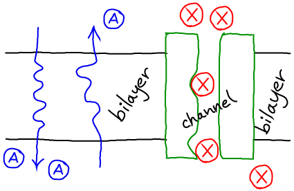

$
\newcommand{\conc}[1]{[\mathrm{#1}]}
\newcommand{\conceq}[1]{[\mathrm{#1}]^{\mathrm{eq}}}
\newcommand{\kcat}{k_{\mathrm{cat}}}
\newcommand{\kdt}{k_{\mathrm{dt}}}
\newcommand{\kdtsol}{k^{\mathrm{sol}}_{\mathrm{dt}}}
\newcommand{\kkeq}{K^{\mathrm{eq}}}
\newcommand{\kmmon}{\kon^{\mathrm{ES}}}
\newcommand{\kmmoff}{\koff^{\mathrm{ES}}}
\newcommand{\kconf}{k_{\mathrm{conf}}}
\newcommand{\koff}{k_{\mathrm{off}}}
\newcommand{\kon}{k_{\mathrm{on}}}
\newcommand{\ktd}{k_{\mathrm{td}}}
\newcommand{\ktdsol}{k^{\mathrm{sol}}_{\mathrm{td}}}
\newcommand{\ss}{\mathrm{SS}}
$
Passive Transport: No Energy Required
Passive "transport" is really just unbiased diffusion through some kind medium or object - as opposed to diffusion through a simple solution, or active transport requiring (free) energy.
But passive transport is key to cellular functioning due to its role in, for example:
- Diffusion of small molecules (e.g., drugs) across lipid bilayers.
- Flow of water through channels.
- Flow of ions through channels including for propagation of the action potential in nerve cells.

Basics of Passive Diffusion
- It refers to diffusion across a membrane or through a membrane-embedded object (a "channel").
- Molecules will tend to move "downhill" according to the concentration gradient - from high to low concentration.
- The flow will tend to continue until equilibrium or another state (of lower free-energy than the initial condition) is reached.
See the thermodynamic/statistical description of a concentration gradient.
Note that the equilibrium point might not exhibit exactly equal concentrations on both sides of the membrane if the transported species interacts strongly with other species present (e.g., electrostatically).
Binding and gating in passive transport
- Binding. In general, if an ion or small molecule crosses the membrane or passes through a channel, the passage will not happen instantaneously, and we can expect there will be some degree of binding to the membrane or channel.
Binding will not affect the ultimate equilibrium (or steady state) that is reached, however, only the rate at which the state is approached.
We don't expect binding to be too strong, otherwise transport could be prohibitively slow.
- Gating. Gating just means switching, on or off. Thus, even though passive transport may require no free energy, the cell will tightly control any gating processes (e.g., ion-channel gating in an action potential: see above) typically using energy. But once the gate on a channel is open, the channel is a passive bystander, like a faucet allowing water flow.